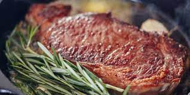

Butcher's Steak (Hanger Steak) Recipe

Description
Butcher (or hanger) steak is great pan cooked, broiled, or grilled. It takes to marinades wonderfully, and really can be substituted for any cut of steak. Just be sure to take the time to trim it well!
Ingredients
- 1 (2 lb.) of butcher's steak (hanger steak)
- salt and freshly ground black pepper to taste
- 1 tbsp. of clarified butter
- 2/3 cup of chicken broth
- 2 tsp. of balsamic vinegar
- 2 tbsp. of cold butter, cut into cubes
- salt to taste
Steps
- Remove all silver skin and extra fat from steak. Carefully cut out connective tissue that connects 2 halves of the steak, seperating the whole into 2 long pieces. Cut lobe of meat from one half (it's a piece that is slightly seperated from the larger half). Then cut each of the 2 larger halves into 2 steaks each. Sprinkle with salt and pepper.
- Heat skillet over high heat. Add butter when pan is hot, then place steaks in the pan. Reduce heat to medium. Cook until browned on all sides, firm, and reddish-pink on the inside. An instant-read thermometer inserted into the center should read 125 degrees F (52 degrees C), a total of approx. 12 minutes. (This cut of meat has a sort of triangular shape, so approx. 4 minutes per side.). Transfer to a warm plate and tent with foil to let steaks rest and allow temperature to rise to 130 degrees F.
- Pour stock into skillet set over medium heat. Stir with a wooden spoon scraping up the browned bits from the bottom. When brownings dissolve and liquid begins to reduce after 2-3 minutes, reduce heat to low. Add accumulated juices from the meat, vinegar, and butter chunks. Cook and stir until butter melts. If liquid has reduced too much, add a splash of broth. Taste to check if sauce needs a bit of salt.
- To serve, slice steaks and spoon pan sauce over them. Enjoy!